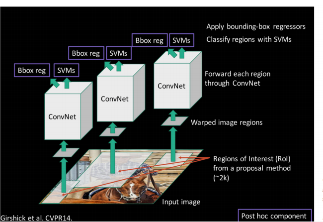
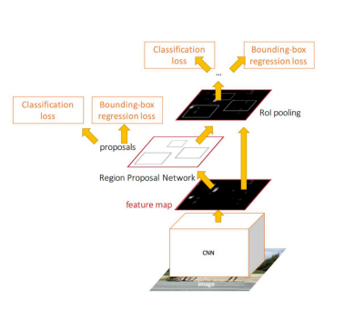
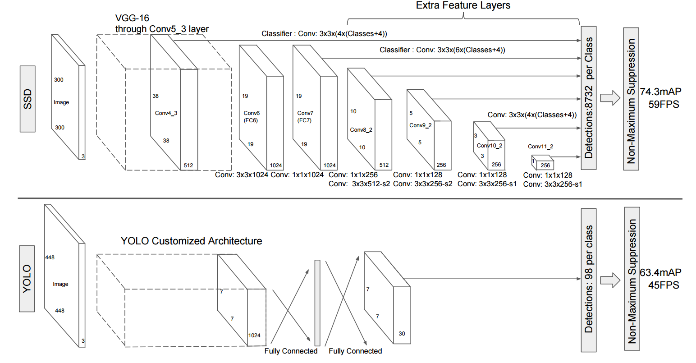
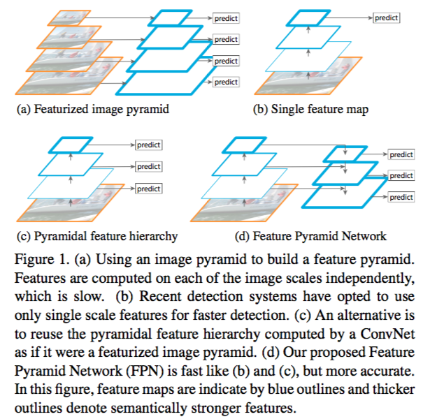
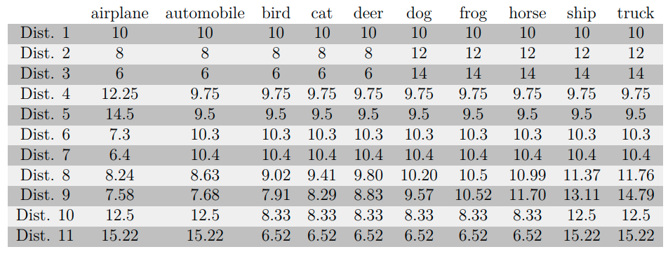
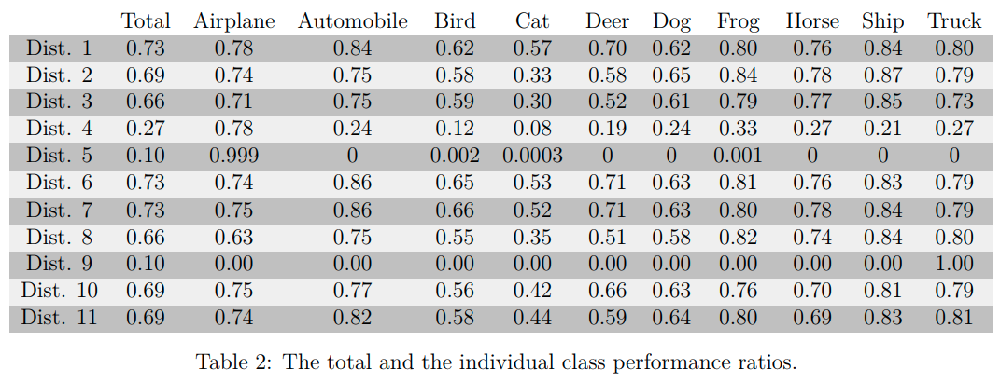
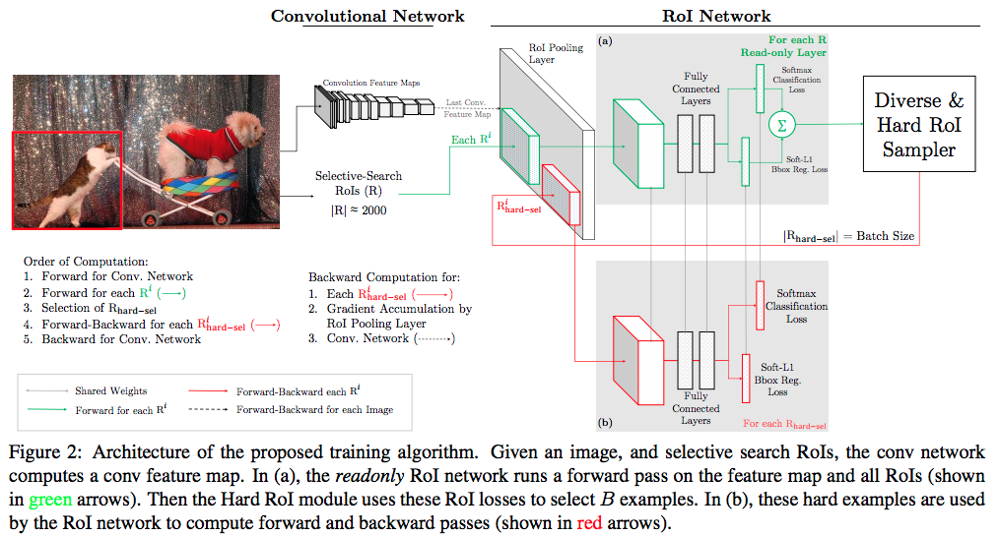
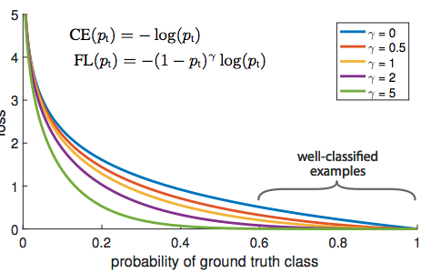

Computer Vision Project Summary
Updated:
For almost the past two months I have been working on an object detection project. There is a lot to digest before I can really put my hand on it. After considering the problem I am facing, I chose to implement the SSD[1] featured by FPN[2] for the object localization in which the DenseNet[3] is the features extracting layer.
Detection Model Overview
Basically, all detection models can be divided into two categories: one-stage where the SSD, YOLO[4] belong and two-stage where the RCNN[5], Fast-RCNN[6] and Faster-RCNN[7] belong. Intuitively two-stage models should be slower and one-stage might sacrifice accuracy for speed.
RCNN
The Region CNN uses the Selective Search[8] to extract about 2K region proposals from an input image at the first stage. Then CNN is adopted to compute CNN features and later those features are leveraged to predict the region class and bounding box regression. The overall loss is
$$
L_{cls}+L_{reg}
$$
where the $L_{cls}$ is the loss of object classification and the $L_{reg}$ is the loss of object bounding box regression.

Fast RCNN
RCNN is slow because for each region proposal there is a forward pass of the CNN. So the Fast RCNN computes CNN features on the whole image once and shares the features of all regions. Also rather than crop or stretch region proposals the Fast RCNN uses ROI Pooling to handle various size input.
Faster RCNN
the Faster RCNN substitutes the Selective Search with the Region Proposal Network(RPN). The RPN directly proposes the Region of Interest(ROI) on feature maps generated by the CNN. The RPN assumes each point on the feature maps is associated with a bundle of boxes. Some boxes contain objects and some do not. The ROI treats boxes having objects inside as ROI.
The Faster RCNN trains the RPN and RCNN jointly. The overall loss is
$$
L_{cls}+L_{reg} + L_{fg-cls}+L_{fg-cls}
$$
where the newly added $L_{fg-cls}$ and $L_{fg-cls}$ are the loss of foreground and background classification and the loss of foreground bounding box regression.

Single Shot MultiBox Detection
The SSD is very similar with the RPN except that the SSD outputs the probability of N(object classes)+1(background) classes based on multi-scale features maps.

Feature Pyramid Network
The Feature Pyramid Network(FPN) leverages multi-scale feature representation as the SSD does. The difference is that the FPN combines low-resolution, semantically strong features with high-resolution, semantically weak features via a top-down pathway and lateral connections while the SSD operates directly on high-resolution, semantically weak features. A similar work I noticed is DSSD[9].

Deal with Heavily Unbalanced Data
Heavily unbalanced data distribution always leads to bad model performance[10]. Table 1 and 2 show the impact of different data distribution of CIFAR-10 on the CNN model. Because a) unbalanced data tends to bias the model b) the loss is dominated by easy examples. To deal with this problem, some approaches have been proposed.


Data augmentation
Make data distribution of each class close by augmenting data which takes up smaller portion and sampling data that takes up a larger portion.
Different Weight on Different Class Loss
Add more weight to the loss of those classes that occur less.
Online Hard Example Mining
In object detection models specifically, Online Hard Example Mining(OHEM)[11] is to forward all the RoIs into RoI Network, sort examples by their loss and select the top B/N examples. Also, non-maximum suppression(NMS) is adopted to avoid loss double counting.

Focal Loss
The Focal Loss[12] is dynamically adjusting the weight of cross entropy loss according to the model’s prediction confidence towards the example. The loss for well-classified examples is reduced so more focus will be on hard examples.

References
[1] SSD: Single Shot MultiBox Detector
[2] Feature Pyramid Networks for Object Detection
[3] Densely Connected Convolutional Networks
[4] YOLO: Real-Time Object Detection
[5] Rich feature hierarchies for accurate object detection and semantic segmentation
[6] Fast R-CNN
[7] Faster R-CNN: Towards Real-Time Object Detection with Region Proposal Networks
[8] Segmentation as Selective Search for Object Recognition
[9] DSSD : Deconvolutional Single Shot Detector
[10] The Impact of Imbalanced Training Data for Convolutional Neural Networks
[11] Training Region-based Object Detectors with Online Hard Example Mining
[12] Focal Loss for Dense Object Detection